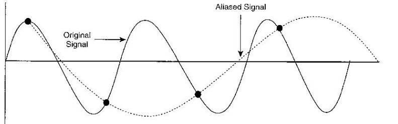
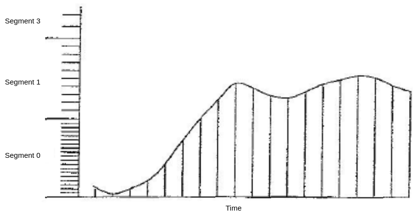
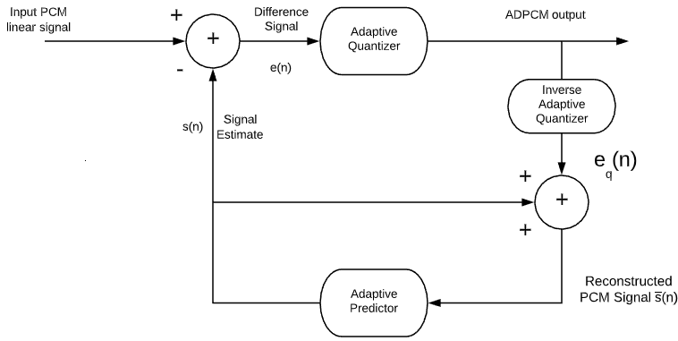
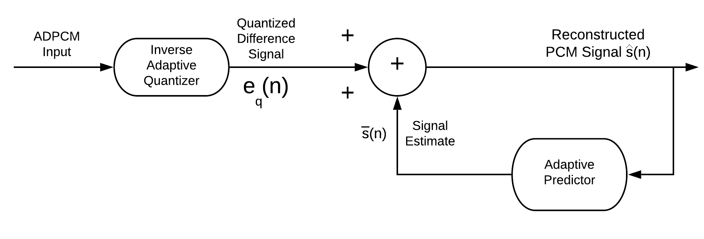
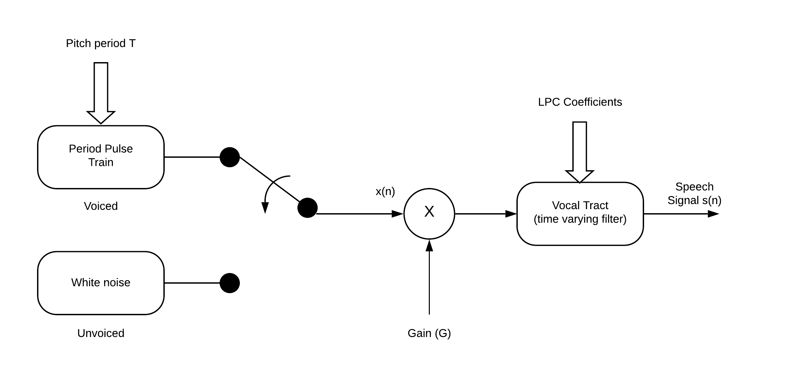
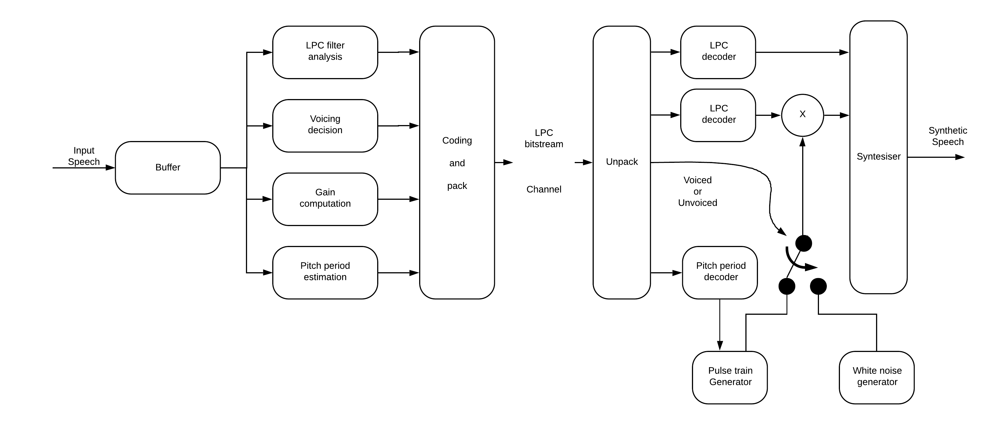
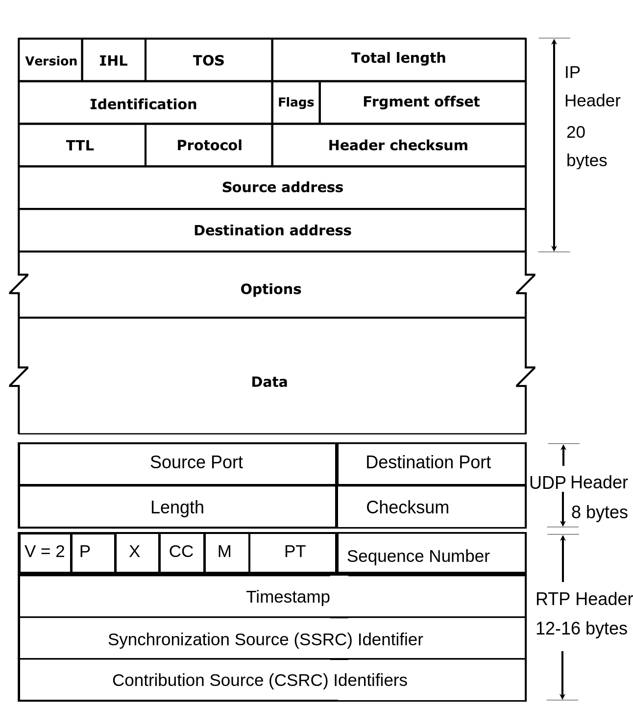

Sampling
Speech has two basic components:
To get a good representation of narrow band human voice the frequency range is approximately 300 - 3400 Hz. This is simplified to 0 - 4000 Hz.
Q. What would be the sampling rate to avoid aliasing as required by the Nyquist Theorem?
Ans. 8000 samples/sec
The reason for the Nyquist criterion is to prevent a false or alias representation of the sampled waveform
Aliasing

An insufficient number of samples of the original waveform can result in a false or alias waveform
The initial process of sampling in called *pulse amplitude modulation (PAM)* [see figure below]
Sampling

Quantization and Coding
One then assigns a bit number representing the magnitude of the waveform. This is called quantization. If linear is used the lower amplitude waveforms will have a great quantization error creating greater distortion in the lower amplitude (or volume) waveforms

Approximate Probability Density Function of Speech

Speech has a much higher probability density function (PDF) for lower level signals than for higher level signals. Therefore, to improve the signal to noise ratio when the signal is coded and then decoded back to an analog signal a non-uniform quantization scheme is utilized illustrated in the following figure:

Two logarithmic coding schemes are used. That used in the United States and Japan is called the  -law. Other countries use the A-law coding scheme.
-law. Other countries use the A-law coding scheme.
The -law is represented by the following equation:
 is the sampled input voltage scaled as shown below:
is the sampled input voltage scaled as shown below:
Where  and
and 
In actual practice the initial waveform is sampled and coded using a uniform 16 bit quantization and then compressed through the -law (or A-law) to an 8 bit quantization. The 8 bit quantization consists of the following pattern:
| P | Seg | Seg | Seg | Step | Step | Step | Step |
|---|
1 Polarity bit, 3 Segment bits, 4 step bits
There are two components to speech:


Sample of voiced speech - waveform and spectrum
The "unvoiced" speech shown in the figure is much more random and "noise like".


Sample of unvoiced speech - waveform and spectrum
There are three general compression techniques, waveform-based, parametric-based, and hybrid coding
In the ADPCM, the adaptive predictor will predict or estimate the current speech signal based on previously received speech samples where where are the estimated predictor coefficients. The difference signal is the prediction error. It is the difference between the speech signal and the signal estimate . The difference between and is the quantization error.




Summary of NB, WB, SWB and FB speech codecs
| Codec | Standard Body/Year | Type | NB or WB or FB | Bit rate (kb/s) | Speech frame(ms) | Bits per sample/frame | Look-ahead (ms) | Algorithm delay (ms) |
|---|---|---|---|---|---|---|---|---|
| G.711 | ITU/1972 | PCM | NB | 64 | 0.125 | 8 | 0 | 0.125 |
| G.726 | ITU/1990 | ADPCM | NB | 40 | 0.125 | 5 | 0 | 0.125 |
| 32 | 4 | |||||||
| 24 | 3 | |||||||
| 16 | 2 | |||||||
| G.728 | ITU/1992 | LD-CELP | NB | 16 | 0.625 | 10 | 0 | 0.625 |
| G.729 | ITU/1996 | CS-ACELP | NB | 8 | 10 | 80 | 5 | 15 |
| G.723.1 | ITU/1996 | ACELP | NB | 5.3 | 30 | 159 | 7.5 | 37.5 |
| MP-MLQ | NB | 6.3 | 189 | |||||
| GSM | ETSI/1991 | (FR)RPE-LTP | NB | 13 | 20 | 260 | 0 | 20 |
| ETSI/1999 | (HR)VSELP | NB | 5.6 | 112 | 0 | 20 | ||
| ETSI/2000 | (EFR)ACELP | NB | 12.2 | 244 | 0 | 20 | ||
| AMR | ETSI/2000 | ACELP | NB | 4.75 | 20 | 95 | 5 | 25 |
| 5.15 | 103 | |||||||
| 5.9 | 118 | |||||||
| 6.7 | 134 | |||||||
| 7.4 | 148 | |||||||
| 7.95 | 159 | |||||||
| 10.2 | 204 | |||||||
| 12.2 | 244 | |||||||
| iBLC | IETF/2004 | CELP | NB | 15.2 | 20 | 304 | 0 | 20 |
| 13.33 | 30 | 400 | 30 | |||||
| G.711.1 | ITU/2008 | PCM-WB (MDCT) |
NB/WB | 64 | 5 | 320 | 5 | 11.875 |
| 80 | 400 | |||||||
| 96 | 480 | |||||||
| G.722 | ITU/1988 | SB-ADPCM | WB | 64 | 0.125 | 8 | 0 | 0.125 |
| 56 | 7 | |||||||
| 48 | 6 | |||||||
| G.722.1 | ITU/1999 | Transform Coding | WB | 24 | 0.125 | 8 | 0 | 0.125 |
| 32 | 640 | |||||||
| ITU/2005 | SWB | 24/32/48 | 480-960 | |||||
| G.719 | ITU/2008 | Transform Coding | FB | 32-128 | 20 | 640-2560 | 20 | 40 |
| AMR-WB (G.722.2) |
ETSI/ITU/2003 | ACELP | WB | 6.6-23.85 | 20 | 132-477 | 0 | 20 |
| SILK | IETF/2009 | CELP | WB | 6-40 | 20 | 120-800 | 0 | 20 |
| Abbreviation | Description |
|---|---|
| NB | Narrowband = 0 - 4kHz |
| WB | Wideband = 0 – 7kHz high fidelity speech general audio frequency range |
| SWB | Super-Wideband = 50 – 14kHz |
| FB | Fullband = 20 – 20kHz to provide high quality, efficient compression for speech music and general audio. Used in teleconferencing and tele-presence applications |
| ITU | International Telecommunications Union |
| ETSI | European Telecommunication Standards Institute |
| IETF | Internet Engineering Task Force |
| PCM | Pulse Code Modulation |
| ADPCM | Adaptive Differential Pulse Code Modulation |
| LD-CELP | Low-delay Code Excited Linear Prediction uses analysis-by-synthesis approach for codebook search |
| CS-ACELP | Conjugate Structure-Algebraic Code Excited Linear Prediction |
| MP-MLQ/ACELP | Multi Pulse—Maximum Likelihood Quantization |
| GSM | Global System for Mobile Communications |
| (FR) Full Rate RPE-LTP | Regular Pulse Excitation/Long Term Prediction Linear prediction coder |
| (HR) VSELP | Half Rate Vector-Sum Excited Linear Prediction |
| (EFR) ACELP | Enhanced Full Rate ACELP |
| AMR | Adaptive Multi Rate Used in wireless communications (3G) |
| iLBC | Internet Low Bit Rate Codec robust tolerance to packet loss used in Google Talk and Yahoo Messenger |
| SILK | Super Wideband Audio Codec used in Skype |
| Mode | Signal Bandwidth (Hz) | Sampling rate (kHz) | Bit-rate(kb/s) | Examples |
|---|---|---|---|---|
| Narrowband (NB) | 300 - 3400 | 8 | 2.4 - 64 | G.711, G.729, G.723, AMR, LPC-10 |
| Wideband (WB) | 50 - 7000 | 16 | 6.6 - 96 | G.711.1, G.722, G.722.1, G.722.2 |
| Super-wideband (SWB) | 50 - 14000 | 32 | 24 - 48 | G.722.1 (Annex C) |
| Fullband (FB) | 20 - 20000 | 48 | 32 - 128 | G.719 |
Determine the input and output data rates for a G.711 codec given that the sample rate is 8kHz and the sample is converted to a 14-bit linear code before being compressed into non-linear PCM.
Ans:
The compression ratio is
The G.726 codec is based on ADPCM (Adaptive Differential PCM). Assume the codec’s input speech signal is 16-bit linear PCM with a sampling rate of 8 kHz. The output of the G.726 can operate at four possible data rates; 40kb/s, 32kb/s, 24kb/s and 16 kb/s. How are these data rates obtained?
Ans: For the ADPCM encoder, only the difference signal between the input PCM linear signal and the predicted signal is quantized and coded. The difference signal has a much smaller dynamic range than the input to the PCM speech signal so fewer quantization levels are needed.
Assume that the number of bits needed to code each quantized difference signal is x,
For kb/s
=> kb/s = samples/sec bits/sample
=> bits/sample
For kb/s
=> kb/s = samples/sec bits/sample
=> bits/sample
For kb/s
=> kb/s = samples/sec bits/sample
=> bits/sample
For kb/s
=> kb/s = samples/sec bits/sample
=> bits/sample
For compression ratios when compared to standard PCM at kb/s
The G.723.1 codec transmission rates can operate at 5.3(ACELP Algebraic-Code-Excited Linear Predication) or 6.3 kb/s (MPMLQ Multi-Pulse—Maximum Likelihood Quantization)
What is the frame size?
How many samples are in each frame?
What is the number of parameter bits encoded in each frame for the operating bit rates?
In a Voip system an 8 kb/s G.729 is applied. The packet size can be configured to include one G.729 speech frame per packet or two G.729 speech frames per packet. What is the G.729 payload size, required G.729 IP bandwidth and bandwidth efficiency in each case.
The required IP bandwidth for two frames one packet case is:
= 24 kb/s
The required IP bandwidth for one frame one packet (where the IP/UDP/RTP header is 40 bytes, IP 20 bytes, UDP 8 bytes, RTP 12 bytes):
= 40 kb/s
It is unsuitable for the transport of real-time applications such as voice and video over the network. The complex overhead associated with reliable in sequence packet delivery mechanisms are unsuitable for real-time processes.
It is the more suitable option. It has small header overhead but has no way of determining if packets have been lost or arriving out of sequence.
RTP was originally proposed in RFC 1889 in 1996. Since then it has been refined in RFC 3550 in 2003. It is intended to support the real-time transfer of multimedia data over UDP. RTP added a sequence number and timestamp field which allows the receiver to process the voice/video packets in the correct order. Real-Time Control protocol (RTCP) is used with RTP to monitor the quality of service of a VoIP session and convey information about the participants in an on-going session. The protocol stack including the IP and UDP headers with RTP is shown on the following slide.

RTP Header Definitions
law, the payload type is defined as zero. The payload type for common voice and video codecs are shown in Tables 4.1 and 4.2, respectively.| PT | Codec | Media Type | ms/frame | Default ms/packet | Clock rate(Hz) |
|---|---|---|---|---|---|
| 0 | PCMU | A | 20 | 8,000 | |
| 3 | GSM | A | 20 | 20 | 8,000 |
| 4 | G.723 | A | 30 | 30 | 8,000 |
| 7 | LPC | A | 8,000 | ||
| 8 | PCMA | A | 20 | 8,000 | |
| 9 | G.722 | A | 20 | 8,000 | |
| 18 | G.729 | A | 10 | 20 | 8,000 |
Payload efficiencies in Ethernet frames Ethernet frame with IP/UDP/RTP headers and RTP payload for G.711
Ethernet header IP header UDP header RTP header RTP payload 14 bytes 20 bytes 8 bytes 12 bytes Payload length (e.g. 160 bytes) For a PCM stream the required bandwidth is 64kb/s (160bytes x 8 bits/byte)/64kb/s = 20 ms [1 Ethernet frame every 20 ms]
The required bandwidth at the IP level is : = 80 kb/s
40 is the IP/UDP/RTP header
The bandwidth efficiency at the IP level is:
The required bandwidth at the Ethernet level is : = 85.6 kb/s
54 is the Ethernet + IP/UDP/RTP header
The bandwidth efficiency at the IP level is: